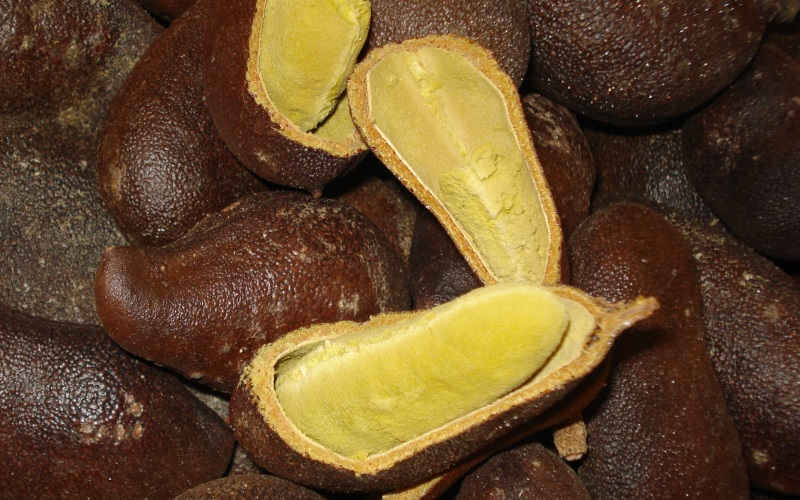
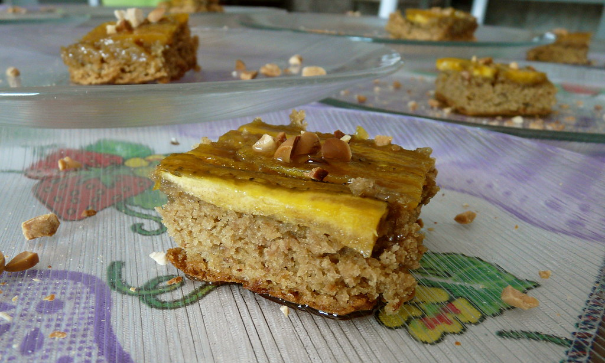

Aspectos Químicos do Jatobá
O jatobá é uma fruta rica em fibras e vitaminas do complexo B, além de possuir alto teor de cálcio. Sua farinha é utilizada na produção de pães, bolos e sobremesas por sua versatilidade e valor nutricional.
Além de ser amplamente utilizado na alimentação, o jatobá possui propriedades medicinais, sendo usado em tratamentos naturais contra doenças respiratórias e digestivas.
Receita: Torta de Jatobá
Ingredientes
- 200g de manteiga sem sal
- 100g de açúcar
- 2 gemas
- 2 latas de leite condensado
- 100g de farinha de jatobá (peneirada)
- 1 pacote de biscoito maisena
- 200ml de leite
- 20ml de licor (opcional)
- 2 latas de creme de leite sem soro
Modo de Preparo
- Bata a manteiga, o açúcar, as gemas, o leite condensado e a farinha de jatobá até obter um creme esbranquiçado.
- Acrescente o creme de leite sem soro e misture delicadamente.
- Umedeça os biscoitos maisena no leite misturado com o licor.
- Monte a torta em camadas alternadas de biscoito e creme.
- Leve ao freezer por 2 horas.